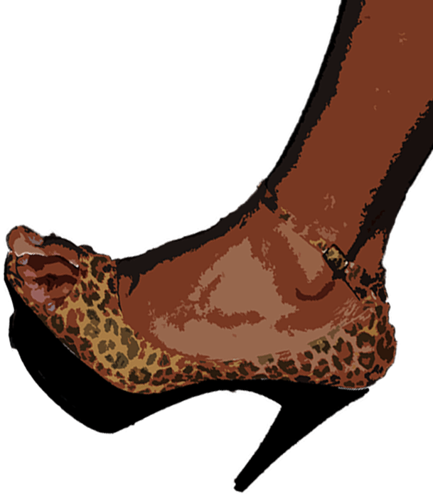

Title Sequence Project
"Silent Grosvenor"


The Video

Skills Used


I created all of the assets seen in the below video individually in photoshop using multiple tools such as layer masks, filter gallery, type tool and selection tools.
Once all of the assets were in the document, I was able to manipulate different objects and give them movement changes, while also layering them at different depths creating 2.5D space. Additionally I transitioned most of the scenes, all in Adobe After Effects
When the final after effects draft was complete, I was able to add any final differences like framing, more transitions and a none-copyright sound track that would fit with the theme, using Adobe Premier Pro.
×